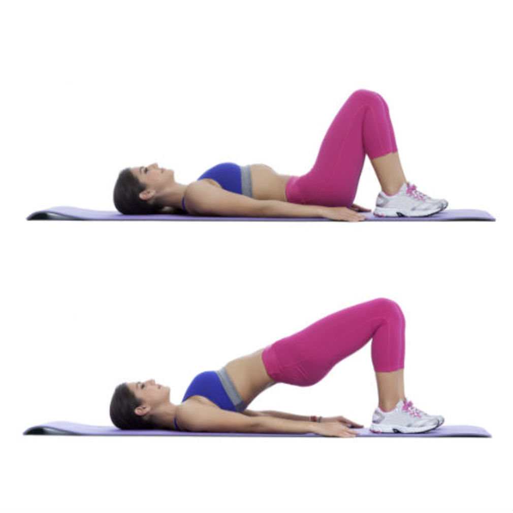

L’exercice du relevé de bassin ou hanches pont est aussi appelé « butt lift », est considéré aussi parmi l’un
des meilleurs exercices de musculation pour avoir de belles fesses bien galbées.
Le relevé de bassin est un exercice de musculation plutôt facile à réaliser et permet de travailler de nombreux
muscles en synergie. Pour être sûr de le réaliser correctement et de ne pas vous faire mal au dos, il convient de
respecter quelques consignes.
Ne pas trop forcer en faisant du sport , le but est de se faire plaisir et de profiter , essayer de monter le rythme
des exercices étape par étape pour que votre corps s’habitue .

Application
Allongez-vous sur le dos et fléchissez les genoux de manière à poser vos pieds à plat sur le sol.
Placez vos bras le long du corps.
Ensuite,soulevez vos fesses aussi haut que possible, comme un pont.
Le but est de remonter vos fesses au maximum en les contractant pour que votre axe genoux – bassin – épaules forme
une ligne droite. Maintenez la position au moins une seconde, vous allez sentir vos fesses travailler.
Relâchez et contrôlez la descente de votre bassin. Une fois revenu en position initiale, vous pouvez continuer avec
les répétitions suivantes.
Expirez en montant et inspirez en descendant.
Muscles travaillés
Les principaux muscles travaillés pour les relevés de bassin sont les muscles fessiers (principalement le grand
fessier – muscle grand glutéal).